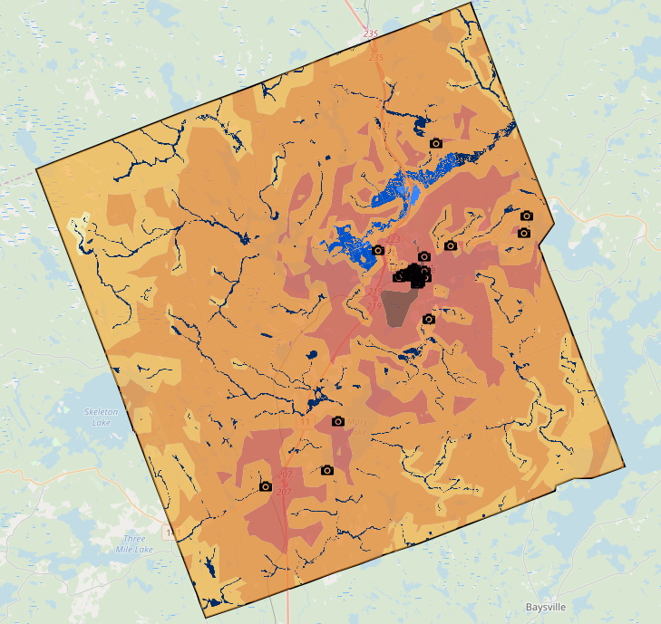
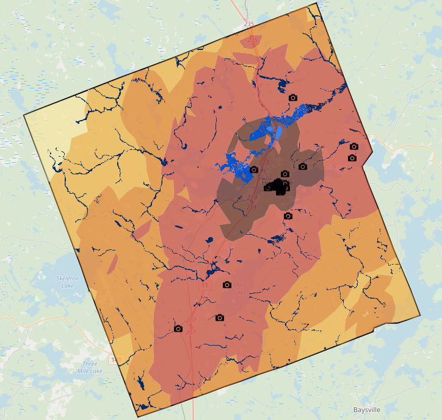

Town of Huntsville
The town of Huntsville is located within the Municipality of Muskoka in southern Ontario. It has an area of 776, 000 km2 and a population of 20,000 residents as well as 6,000 seasonal residents (Canada 2016 Census). The town is known for its diverse natural landscapes with countless water bodies and extravagant forests, besides, the town is an ancestral territory with rich cultural assets. Thus, the town not only offers high-quality of living to the residents, but also recreational lifestyle opportunities such as cottaging and fishing, to seasonal tourists.
According to Huntsville’s Official Plan, the town aims to be a more resilient community in terms of environmental, economic, social and infrastructural aspects. And Huntsville plans to address the needs of its residents of all ages while balancing the needs of visitors. According to Maslow’s hierarchy of needs, shelter is one of the most basic needs. Based on these premises, the chosen theme for the study was to define the most suitable residential locations, also known as the livability index, for both the residents and tourists in the town of Huntsville. The livability index was determined by the distance from the town’s environmental, economic, social and infrastructural assets using multi-criteria analysis. If a location has a close Euclidean distance to some of the desirable facilities and relatively long distance from less desirable assets, it has a high livability index. These variables that determined the livability index include schools, healthcare facilities, flood zones, heritage attractions, parks, commercial land use, snow plow facilities, and bus stations. These datasets were obtained from Scholars Geoportals, and Town of Huntsville data.
Image 2: Livability Index for Residents

Image 2: Livability Index for Residents
Leaflet
Javascript